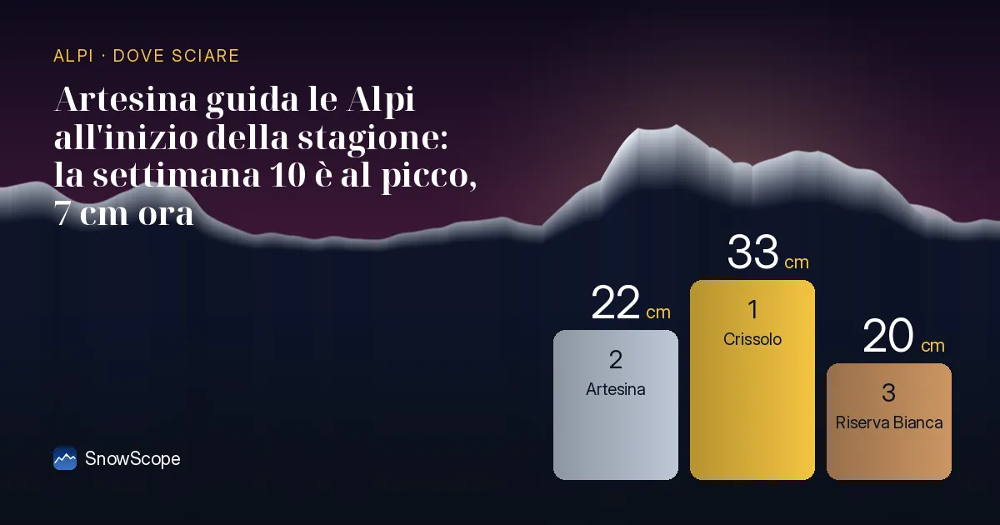
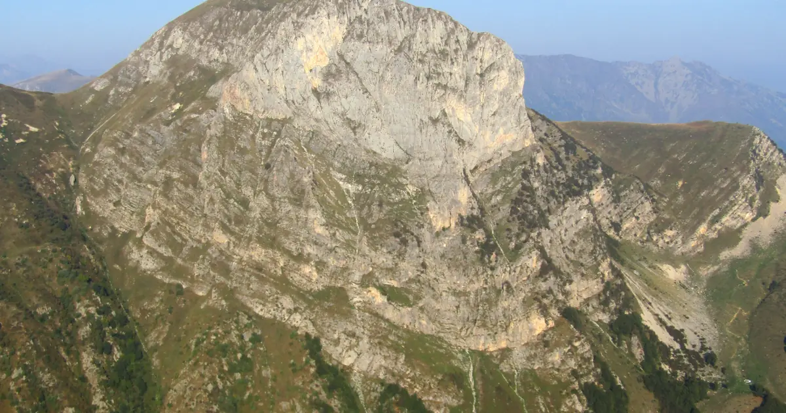

Artesina guida le Alpi all'inizio della stagione: la settimana 10 è al picco, 7 cm ora
Artesina in Italia si posiziona davanti ai suoi rivali con 22 cm sui pendii superiori a partire da giovedì. I dati satellitari mostrano neve su 46.450 km² delle Alpi, ma la stagione è appena iniziata: storicamente, le settimane 10, 9 e 11 portano lo sci migliore qui.
Le previsioni neve in tempo reale per Artesina nell'app SnowScopeAltezza neve, allerte powder e mappa 3D, gratis.
Perché Artesina ora e quando tornare
Artesina ha accumulato 55 cm negli ultimi tre giorni, più della maggior parte dei rivali in questo sondaggio. I suoi pendii superiori a 2.091 m tengono 22 cm oggi, rispetto a 19 cm a Isola 2000 e 20 cm a Riserva Bianca. Tuttavia l'insight reale sta nella tempistica: a questa quota su Artesina, dalla metà di novembre fino a fine dicembre (settimane 10, 9 e 11) è quando arriva tipicamente la neve profonda. Adesso, all'inizio di novembre, il manto è sottile ovunque e soggetto a danni.
Il livello di congelamento giovedì si situa tra 1.490 m e 1.670 m, il che significa che la neve alla base di Artesina (801 m) non persisterà. Anche a metà quota (1.446 m), il modello mostra solo 2 cm. I pendii superiori rimangono il tuo unico terreno affidabile.
| Località | Altezza neve | Neve fresca, 72 h | In arrivo, prossimi giorni | Quota max |
|---|---|---|---|---|
| Artesina | 22 cm | 55 cm | 9 cm | 2.091 m |
| Isola 2000 | 19 cm | 58 cm | 7 cm | 2.601 m |
| Riserva Bianca | 20 cm | 52 cm | 9 cm | 2.054 m |
| Crissolo | 33 cm | 42 cm | 6 cm | 2.308 m |

Cosa le ultime 72 ore ti dicono
Tre giorni di neve hanno ridisegnato la regione. Le Alpi ora portano neve su 46.450 km², un salto di 11.060 km² da lunedì. Tra le quattro stazioni tracciate qui, la neve fresca è variata da 42 cm a Crissolo a 58 cm a Isola 2000. Artesina ha ricevuto 55 cm in quel periodo, con 31 cm arrivati solo giovedì.
Tuttavia la neve fresca non equivale a profondità sciabile, specialmente in autunno. Crissolo si trova a un'elevazione di base più alta (1.537 m) e beneficia di un livello di congelamento più caldo oggi (1.840 a 2.000 m). Entro sabato, quel livello scenderà a 1.820 a 2.140 m, permettendo alla neve di consolidarsi meglio. Isola 2000, con base a 1.828 m e vetta a 2.601 m, è posizionata abbastanza in alto perché tutto il suo terreno rimanga ben al di sopra del livello di congelamento durante il fine settimana.

Previsioni per il fine settimana e stabilità dei pendii
Da venerdì a domenica si attenderà neve nuova marginale. Artesina prevede 8 cm venerdì, poi solo 1 cm sabato e nulla domenica. Isola 2000 prevede 7 cm venerdì, poi 0 cm per il fine settimana. Entro domenica sera, 671 stazioni sciistiche nelle Alpi avranno neve, in calo da 785 oggi. La neve non si approfondirà molto, ma i livelli di congelamento in calo significheranno che il consolidamento migliorerà.
Questa copertura così sottile all'inizio della stagione nasconde pericoli. Rocce, erba e terreno esposto giacciono proprio sotto la superficie sui pendii esposti a sud e alle quote inferiori. Rimani sulle piste segnate e preparate. Se prevedi di lasciare le piste, consulta prima il bollettino valanghe ufficiale; una base sottile può nascondere instabilità nonostante neve fresca profonda sopra.
Quota e esposizione: dove la neve persiste
Il modello di Artesina mostra il contrasto netto tra le quote. A 801 m di base, il modello di profondità legge 0 cm oggi e prevede 0 cm di neve nuova nella prossima settimana. A 1.446 m, hai 2 cm ora, con 4 cm previsti in arrivo. Alla vetta (2.091 m), 16 cm sono sotto i tuoi piedi, salendo a 36 cm entro venerdì prossimo. Questo range verticale è cruciale: sali per sciare, scendi per prendere le seggiovie.
I pendii esposti a nord e in ombra mantengono la neve più a lungo dei terreni esposti a sud, particolarmente a novembre quando il sole è basso ma persistente. Le piste preparate alle quote più alte offrono lo sci più sicuro e affidabile questo fine settimana.
Rivali e alternative
Isola 2000 si posiziona seconda in questo sondaggio con 19 cm sui pendii superiori e una base a 1.828 m. A metà quota (2.214 m), 14 cm sono sotto i tuoi piedi, più profonda che in 43 dei 46 ultimi inverni a questa data. Questa neve di metà zona è rara per inizio novembre e vale la pena notarla. Riserva Bianca e Crissolo seguono, ciascuna con basi sottili simili ma riserve sui pendii superiori ragionevoli.
Controlla i siti web delle stazioni per l'apertura delle seggiovie prima di viaggiare. La neve sulla mappa non garantisce terreno aperto.
Guardando avanti
Questo fine settimana segna l'inizio della stagione. Lo sci vero arriva nelle settimane 10, 9 e 11—da fine dicembre a inizio gennaio. Se stai considerando una giornata in montagna questo fine settimana, trattala come ricognizione. Prova le condizioni, esplora il terreno e acclimatati. Pianifica la tua vacanza principale per le settimane di neve profonda che arrivano.
Consigli per sciatori
- Guida verso i pendii superiori di Artesina o il terreno elevato a Isola 2000. Le base e le quote intermedie hanno troppo poca neve per sciare in sicurezza questo fine settimana.
- Evita i pendii esposti a sud. Le piste esposte a nord e il terreno in ombra mantengono la neve più a lungo quando lo strato è così sottile.
- Rimani sulle piste preparate e segnate. Le rocce si nascondono sotto 20 cm di neve d'inizio stagione; avventurati fuori pista solo dopo aver letto il bollettino valanghe ufficiale.
- Verifica l'accesso alle seggiovie sul sito web della stazione prima di partire. L'inizio di novembre è il giorno di apertura per alcune aree, chiusure per altre.
- Se le condizioni sembrano marginali, torna nella settimana 10. Allora è quando storicamente Artesina e la regione passano allo sci affidabile.
Su questi numeri
Le altezze neve delle località sono la neve più alta sui pendii superiori secondo il modello neve di SnowScope (circa 1 km, calcolo del 5 novembre); sono stime per un'area, non una misura in un punto. I valori delle stazioni sono misure alla data indicata. Le previsioni possono cambiare. Leggi sempre il bollettino valanghe ufficiale prima del fuoripista.
Bollettini valanghe ufficiali: EAWS (Alps)
Cita questo articolo
Per ricerca, didattica o stampa: numeri e grafici sono liberamente riutilizzabili con licenza CC BY 4.0 citando così.
SnowScope (2026), Artesina guida le Alpi all'inizio della stagione: la settimana 10 è al picco, 7 cm ora, https://snowscope.app/blog/it/2026/11/alps-where-to-ski-this-weekend-5-november-2026.html, consultato il 2026-11-05
SnowScope (Atlas Labs). (2026, November 5). Artesina guida le Alpi all'inizio della stagione: la settimana 10 è al picco, 7 cm ora. SnowScope snow reports. https://snowscope.app/blog/it/2026/11/alps-where-to-ski-this-weekend-5-november-2026.html
BibTeX
@misc{snowscope2026alpswheretoskithisweeken,
author = {{SnowScope (Atlas Labs)}},
title = {Artesina guida le Alpi all'inizio della stagione: la settimana 10 è al picco, 7 cm ora},
year = {2026},
month = nov,
howpublished = {\url{https://snowscope.app/blog/it/2026/11/alps-where-to-ski-this-weekend-5-november-2026.html}},
note = {Published 2026-11-05 10:27 UTC; accessed 2026-11-05}
}· CC BY 4.0 · Metodi, dati e strumenti →
Artesina: neve e temperatura per quota, quest'inverno vs lo scorso (strumenti) →
Segui Artesina
Gratis: un messaggio quando arriva la neve e il meteo ogni mattina.
Altri bollettini neve

Cortina d'Ampezzo in tre modi: Tofana, Faloria-Cristallo e Cinque Torri-Lagazuoi, con 46 inverni di dati sulla neve a tre quote.

Alpe d'Huez guarda il sole. Come organizzare la giornata per ora e quota, con la neve di 46 inverni passati dai villaggi bassi al Pic Blanc.